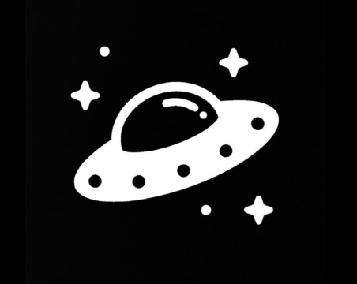
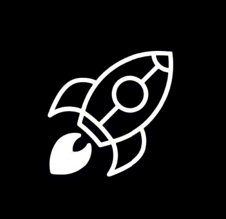
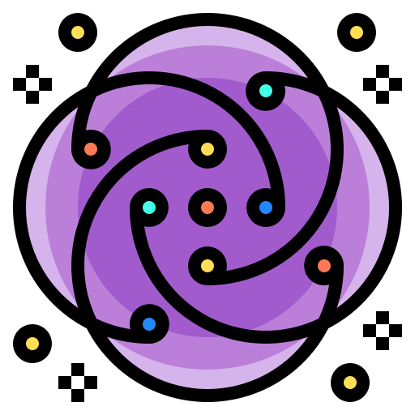
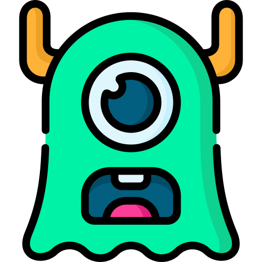

Zordon kwam uit een verre melkweg en had een nieuwsgierige geest. Hij reisde altijd met zijn ruimteschip vol mysterieuze gadgets en ontdekkingen.
Xylora was een avontuurlijke alien die de sterren ontdekte met haar magische kompas. Ze vond altijd verborgen werelden waar niemand anders ooit had geweten dat ze bestonden.
Quivix had een enorme verzameling kristallen die hij overal in het universum verzamelde. Elke kristal had een eigen verhaal, en hij vertelde ze graag aan zijn vrienden.
Phrakla was een wetenschapper op zoek naar de geheimen van het universum. Haar laboratorium was een kleurrijke mix van planten en machines die gloeiden met onbekende energie.
Marnixar was een vredige krijger, altijd op zoek naar manieren om de galaxis te beschermen. Zijn zwaard was van puur sterrenlicht, en hij gebruikte het alleen voor gerechtigheid.

Vellinor was een kunstenaar die de mooiste schilderijen maakte met behulp van lichtstralen. Zijn werk was beroemd in heel het universum en inspireerde vele andere buitenaardse kunstenaars.
Zynthor had de gave om tijd te manipuleren, maar hij gebruikte zijn kracht altijd voor goede doelen. Hij reisde door de tijd om de geschiedenis van verschillende planeten te beschermen.
Xalira was een mysterieuze verhalenverteller die alle uithoeken van de melkweg had bezocht. Haar verhalen waren zo magisch dat zelfs de sterren stil werden om naar haar te luisteren.
Welkom bij Planet Clicker! In dit spannende spel is het jouw taak om de levende wezens op verschillende planeten te vernietigen. Dit doe je door op de planeten te klikken! Elke klik helpt je om je doel sneller te bereiken, maar maak je geen zorgen: je hebt tal van upgrades tot je beschikking die ervoor zorgen dat je voortgang steeds sneller verloopt. Met slimme upgrades kun je je kliks krachtiger maken, nieuwe planeten ontgrendelen en je snelheid verbeteren. Hoe verder je komt, hoe meer mogelijkheden je hebt om je kracht te vergroten. Zet alles op alles om de hoogste scores te behalen en het universum te veroveren! 🌠💥
level 1